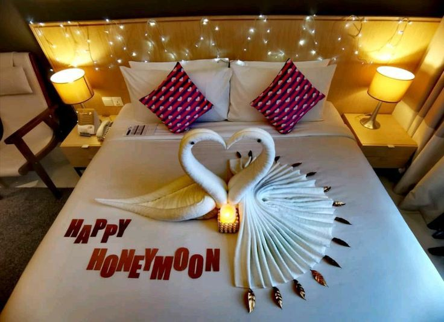

Pengertian Towel Art
Towel Art adalah seni kerajinan tangan yang menggunakan handuk mandi dengan berbagai ukuran untuk membentuk lipatan menyerupai hewan, bunga, atau bentuk artistik lainnya. Towel art pertama kali populer di dunia kapal pesiar, lalu berkembang dalam industri perhotelan sebagai bentuk pelayanan eksklusif, terutama saat momen spesial seperti bulan madu, ulang tahun, atau perayaan lainnya.
Biasanya, towel art akan ditemukan di hotel berbintang sebagai sambutan menarik di atas tempat tidur tamu. Bentuk-bentuk populer antara lain angsa, gajah, tikus, hingga kelinci. Pembuatannya membutuhkan ketelitian dan kreativitas tinggi dari seorang pramugraha, staf hotel yang bertugas menyiapkan kamar.
Selain memperindah tampilan kamar, towel art juga menjadi bentuk interaksi hangat antara staf dan tamu. Tidak ada standar baku, sehingga kreativitas adalah kunci utama. Bahkan di beberapa hotel, tamu dapat diajak ikut serta dalam proses pembuatannya sebagai pengalaman unik selama menginap.
Jenis-Jenis Towel Art
Berikut beberapa bentuk towel art paling populer yang bisa kamu coba buat sendiri. Klik pada masing-masing untuk melihat tutorial video lengkapnya!